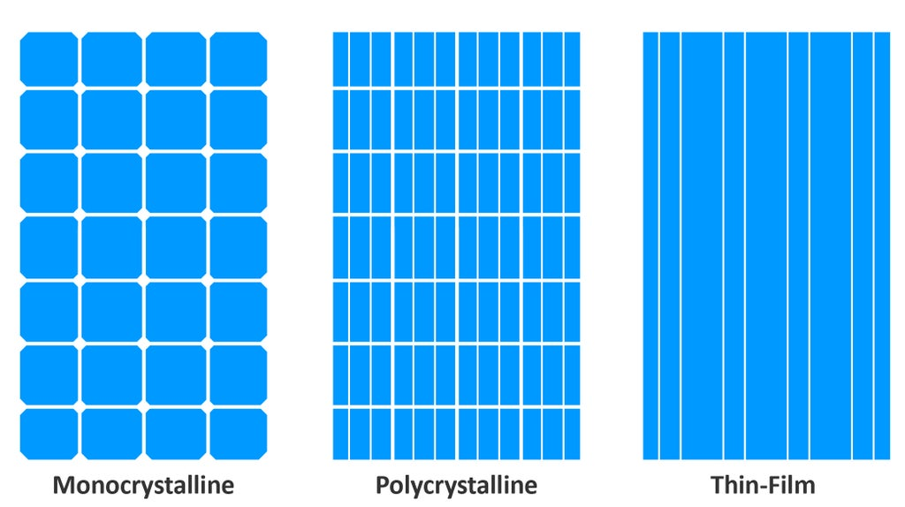
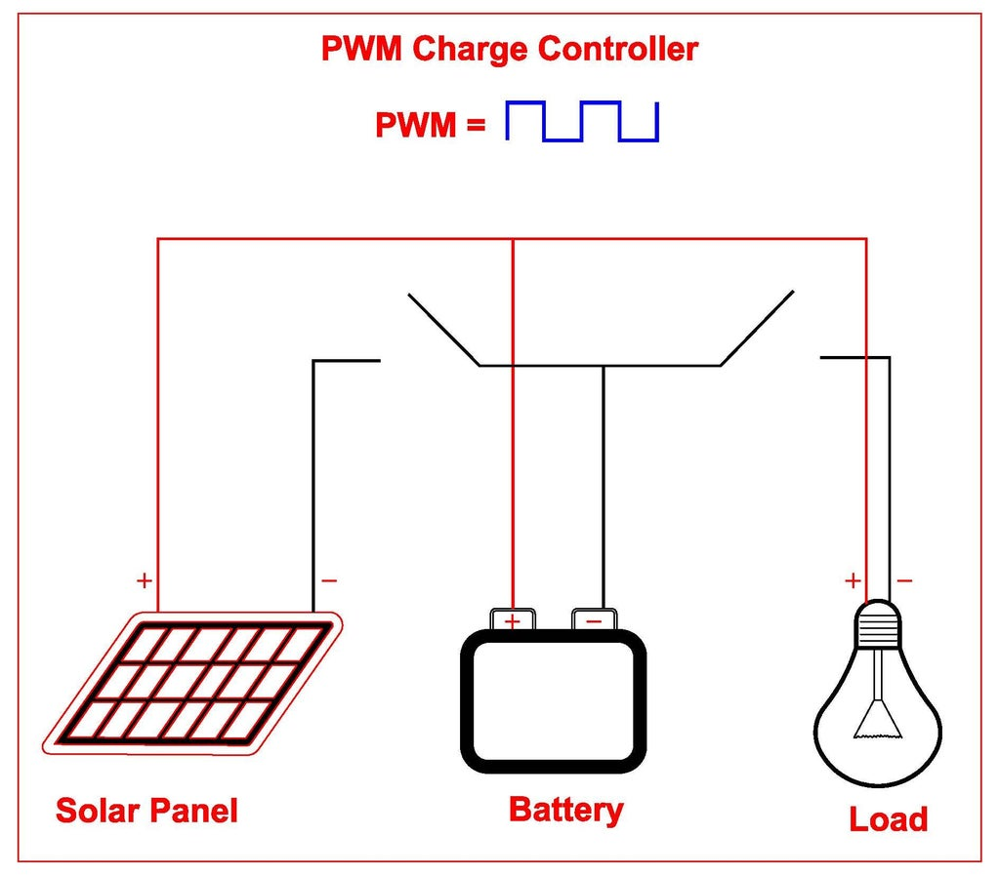
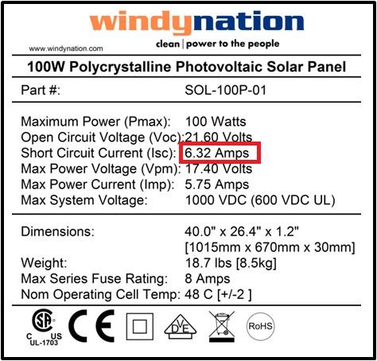
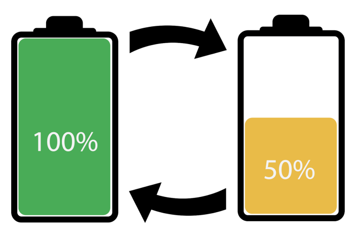
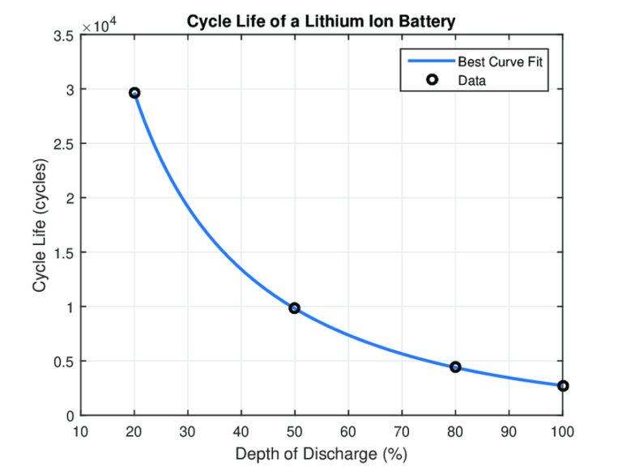

Off-grid notes
Необходими неща
https://www.opengreenenergy.com/diy-off-grid-solar-system-v2-0-2/
The following 6 steps are required for building a DIY Off-Grid Solar System:
-
Calculate Daily Energy Consumption
-
Select the Battery
-
Select the Solar Panel
-
Select Charge Controller
-
Select Inverter
-
Balance of System ( BOS )
Online calculator for Energy Consumption
Соларен панел
Типове соларни панели

- Monocrystalline:
Monocrystalline solar cells are more efficient because they are cut from a single source of silicon.
As monocrystalline solar cells are made out of a single crystal of silicon, electrons are able to flow easier through the cell, which makes the efficiency higher than other types of solar panels. The efficiency can range from 17% to 22%.
Because of the way that monocrystalline panels are manufactured, they end up costing more than other kinds of solar panels.
- Polycrystalline:
Polycrystalline solar cells are blended from multiple silicon sources and are slightly less efficient. The multiple silicon crystals in each solar cell make it harder for electrons to flow. This crystal structure makes the efficiency rate of polycrystalline panels lower than monocrystalline panels. Polycrystalline panel efficiency ratings will typically range from 15% to 17%.
Polycrystalline solar panels are cheaper to produce than monocrystalline panels. Most of the residential installations use Polycrystalline solar panels.
- Thin Film:
Thin-film solar panels are made by depositing a thin layer of a photovoltaic substance onto a solid surface, like glass. Examples of these photovoltaic substances include Amorphous silicon (a-Si), Cadmium telluride (CdTe), Copper indium gallium selenide (CIGS), Dye-sensitized solar cells (DSC).
The main advantage of amorphous solar cells is that they can generate electricity in weak light conditions. However, the main problem of amorphous solar cells is the low photoelectric conversion efficiency, which is about 10-13% only.
Which One You Should Choose?
For most residential solar panel installations, it makes the most sense to install monocrystalline panels. Although you have to pay a higher price, you get better efficiency and a sleeker aesthetic than you would with polycrystalline panels.
If you’re on a tight budget, however, polycrystalline panels might make more sense for you.
Thin-film solar cells are mostly used in large-scale operations, such as utility or industrial solar installations because of their lower efficiency ratings.
Слънчева радиация
Информация за с. Приморци
To find out the amount of solar insolation in your area, you can use the Global Solar Atlas. Follow the following steps:
зарядно charge controller
It is a device that is placed between the Solar Panel and the Battery Bank to control the amount of electric energy produced by Solar panels going into the batteries. The main function is to make sure that the battery is properly charged and protected from overcharging.
As the input voltage from the solar panel rises, the charge controller regulates the charge to the batteries preventing any overcharging and disconnects the load when the battery is discharged.
Types of solar charge controllers There are currently two types of charge controllers commonly used in PV power systems :
- Pulse Width Modulation (PWM) Controller >PWM stands for Pulse Width Modulation, which stands for the method it uses to regulate charge. Its function is to pull down the voltage of the solar array to near that of the battery to ensure that the battery is properly charged. In other words, they lock the solar panel voltage to the battery voltage by dragging the Solar panel Vmp down to the battery’s system voltage with no change in the current. > > 
- Maximum Power Point Tracking (MPPT) Controller
MPPT charge controller extracts the maximum power from the PV module by forcing the PV module to operate at a voltage close to the Maximum Power Point (MPP). It has been designed to adjust its input voltage to utilize the maximum power output of the solar array and then transform this power to supply the varying voltage requirement. The input voltage is varied by using a DC/DC converter.
> MPPT controllers do this via an adaptive algorithm that follows the maximum power point of the Solar panel/array and then adjusts the incoming voltage to maintain the most efficient amount of power for the system. >The performance advantage of an MPPT controller is substantial (10% to 40%) when the solar cell temperature is low (below 45°C). They are more efficient than the PWM controller. The efficiency of a typical MPPT controller is around 94-99%. >
Choosing the most suitable charge controller requires two steps:
- Voltage Selection: The charge controller voltage shall be matched with the system voltage. The standard configurations are 12, 24, and 48 volts.
- Current Selection: To select the proper Charge Controller, you have to know the maximum output current of the solar panel and Battery Voltage. $$ I_{max} = \frac{Solar panel Wattage}{System Voltage} × Safety factor $$ $Safety Factor$ : We use a standard factor to account for all Solar panel output-boosting circumstances like a sunny day with a very clear snowpack. (additional light reflected off the snow). That factor is 1.3 or 130%
With a PWM controller, the current is drawn out of the panel at just above the battery voltage, whereas with an MPPT controller the current is drawn out of the panel at the panel maximum power voltage ( Vmp). To understand this concept, let’s take an example.
Example: Consider a 100 Watt panel with a current(Imp) of 5.75A & voltage (Vmp) of 17.40V connected to a 12 V lead-acid battery.

PWM Controller
With a PWM controller, the panel voltage would be dragged down near the voltage of the battery but the current stays the same at 5.75 amps. This happens because Solar Panels behave like a current source, so the current is determined by the available sunlight.
Now the power (P)= Vbat x Imp = 12V x 5.75A = 66.6W. So the Solar panel is now behaving like a 66-watt panel.
MPPT Controller
With an MPPT controller, the panel voltage will operate at voltage close to the Maximum Power Point (MPP), and the current stays the same at 5.75 amps.
Now the Power = Vmp x Imp = 17.4 x 5.75 =100W
This equates to a loss of 100W-66.6W = 33.4W
However the above calculation is overly optimistic as the voltage drops as temperature increases; so assuming the panel temperature rises to say 30°C above the standard test conditions (STC) temperature of 25°C and the voltage drops by 4% for every 10°C, i.e. a total of 12%.
Then the power drawn by the MPPT will be 5.75A * 15.3V = 88W
Power loss = 88-66.6 =21.4W, i.e. 21% more power than the PWM controller.
Батерия
Deep-Cycle Battery:
A deep cycle battery is designed to provide a steady amount of current over a long period of time. This type of battery is also designed to be deeply discharged over and over again. To accomplish this, a deep cycle battery uses thicker plates. This will lead to lower surfaces and accordingly less instant power, unlike the starting batteries.
The following factors determine the battery bank size:
-
Daily power consumption
-
System voltage ( 12V / 24V /48V )
-
Depth of Discharge ( DOD )
Depth of Discharge DOD

The battery’s Depth of Discharge ( DOD ) is the percentage of the battery capacity that can be safely drained without damaging the battery.  As you can see in the above figure, the more a battery is allowed to discharge, the shorter its lifespan. Deep cycle batteries are designed to discharge 80% of their capacity but are recommended to choose a value of around 50% as a good trade-off between longevity, cost.
For a deep cycle battery, 50% and for a lithium battery 80% DOD is considered as good practice.
Оразмеряване на батерията
$$ Battery Capacity ( AH ) =\frac{Daily Energy Consumption ( Wh )}{System Voltage * DOD} $$
Example:
Daily energy consumption =719WH ( Calculated )
System Voltage = 12V
DOD = 50% for Flooded Lead Acid Battery Battery Capacity = 719WH / ( 12V x 0.5 ) = 119.8AH
You have to select a battery with a capacity of more than 119.8AH. The nearest value available in the market is 120AH.
Battery Selected: 12V / 120AH
Оловно-киселинна батерия
- Flooded Lead-Acid (FLA) :
These types of batteries are submerged in water. These must be checked regularly and refilled every 1-3 months to keep them working properly. It also needs to be installed in a ventilated place to allow battery gases to escape.
- Sealed Lead-Acid (SLA):
SLA batteries come in two types, AGM (Absorbent Glass Mat) and Gel, which have many similar properties. They require little to no maintenance and are spill-proof. The key difference in AGM vs. gel batteries is that gel batteries tend to have lower charge rates and output. Gel batteries generally can’t handle as much charge current, which means they take longer to recharge and output less power.
Литиеви батерии
Lithium is a premium battery technology with a longer lifespan and higher efficiency, but you’ll pay more money for the boost in performance.
The Lithium batteries that are employed in solar systems are Lithium Iron Phosphate (LiFePO4) which have great thermal stability, high current ratings, and a long life cycle. This new technology lasts longer and can be put through deeper cycles. They also require no maintenance or venting, unlike lead-acid batteries. The main downside of lithium batteries is their higher price compared to lead-acid batteries at the moment.
Инвертор
The inverter is rated for Continuous Watts and Surge watts
- Continuous Watts :
Continuous watts is the total amount of watts the inverter can support indefinitely. A 2000 watt inverter can power up to 2000 watts continuously. It is also called the nominal AC output power of the inverter.
If you want to run multiple appliances at the same time, just add up the power rating of the equipment that is running together at the same time.
Example: Running a Fan (80W /200W), 2 nos of LED Light (6W), Laptop (65W), and WiFi Router (6W) at the same timeTotal Continuous Watts = 80+12+65+6= 163W
- Surge Watts ( Peak Watts ):
Surge watts are the amount of power the inverter can support for a very short time, usually momentary. A 2000 watt inverter rated at 4000 surge watts can handle up to 4000 watts momentarily while starting things like motors.
In the above picture, you can see the drill draws 471.6W for a short time period.
In our case, the surge power is applicable for the ceiling fan during the starting which is approximately 200W.